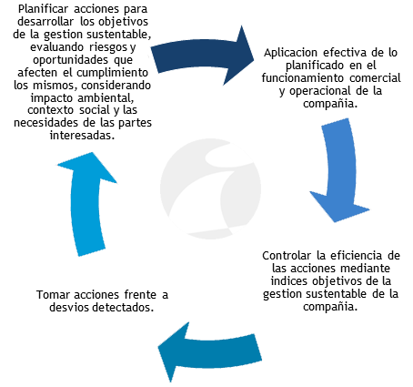

Empresa
Sobre NosotrosNuestra Historia
INDUVIAN S.R.L. es una empresa familiar, nacida en 1984, con presencia fuerte en el mercado Argentino. Dedicada a la elaboración de envases flexibles, su historia reciente está marcada por un crecimiento sostenido, tanto en lo tecnológico como en su gestión empresarial.
Contamos con un grupo humano consolidado y alineado hacia los objetivos estratégicos de la compañía, con gran capacidad para la resolución de los desafíos que, día a día, plantea esta actividad industrial, y una marcada orientación hacia el cliente.
Mantenemos vínculos estrechos con nuestros clientes y proveedores, que nos permiten optimizar la cadena de valor de nuestros productos.
Somos conscientes de nuestro rol social, tanto en lo económico como en lo técnico y ambiental, siendo nuestro accionar transparente y respetuoso de reglas explícitas y tácitas de nuestra sociedad.
Por todo esto, hemos enunciado y trabajamos en nuestra Misión con el objetivo de alcanzar la Visión de la compañía, afirmados en los Valores conseguidos.
Vision, mision y valores
Visión: Ser la compañía argentina líder en envases flexibles, por su calidad de impresión, confiabilidad y servicio al cliente.
Misión: Fabricar productos rentables para la compañía y de alta calidad, que cumplan con los requerimientos de las partes interesadas y generen valor a nuestros clientes, empleados y la sociedad, mediante la gestión eficiente de los recursos, la innovación tecnológica constante y el compromiso social y con el medio ambiente.
Valores: Calidad, Trabajo en equipo, Responsabilidad Empresaria, Mejora continua.
Politica de Calidad
La alta dirección de INDUVIAN S.R.L., empresa dedicada a la impresión, laminación y comercialización de envases flexibles, láminas, bolsas y etiquetas, implementa un sistema de gestión de la calidad para asegurar la mejora continua de sus procesos, basada en los siguientes principios:
Satisfacción del Cliente:
Proporcionando productos y servicios que satisfagan los requisitos del cliente, los legales y reglamentarios aplicables.
Consideración por el personal:
Fomentando el respeto y la participación, tomando como compromiso que ninguna idea se descarta.
Optimización de los recursos:
Para el logro de una mayor productividad y el incremento de la rentabilidad.
Elección responsable de proveedores:
A partir del compromiso de nuestros proveedores.
Sustentabilidad
PLAN DE GESTION SUSTENTABLE.
INDUVIAN S.R.L., ha desarrollado un plan de operación sustentable basado en la normativa PAS FSSC 24000 y los objetivos de Desarrollo Sostenible de la ONU
INDUVIAN S.R.L., aplica el sistema PHCC (Planificar, Hacer, Chequear, Modificar) para desarrollo y control de su gestión de sustentabilidad.
SISTEMA PHCC:

ESTRUCTURA GENERAL DEL PLAN DE GESTION SUSTENTABLE
EJES PRINCIPALES
- Definición del código de ética comercial y operacional de la compañía
- Acciones de planificación para una gestión sustentable
- CODIGO DE ETICA COMERCIAL Y OPERACIONAL
- INDUVIAN S.R.L., se compromete a apoyar y respetar la protección de los derechos humanos reconocidos internacionalmente.
- En lo operacional, INDUVIAN S.R.L., garantiza la libertad de asociación y reconoce el derecho a la negociación colectiva de los trabajadores, cumpliendo con todas las normativas contractuales que surgen de los convenios colectivos de trabajo. Garantiza la eliminación efectiva del trabajo infantil en cualquiera de sus formas.
- INDUVIAN S.R.L., trata a todos sus trabajadores con respeto, dignidad y sin discriminación alguna. Proporciona un entorno de trabajo seguro para la salud y seguridad de todos los trabajadores.
- INDUVIAN S.R.L, se compromete a trabajar contra la corrupción en todas sus formas, incluyendo extorsión y soborno, y operar de manera independiente e imparcial de acuerdo con las leyes locales e internacionales.
- INDUVIAN S.R.L., respeta las normas de ética empresarial, competencia e integridad y asegura la confidencialidad y privacidad de la información de los trabajadores y las empresas con las cuales interactúa.
- INDUVIAN S.R.L., se compromete a desarrollar un programa de acciones destinadas a reducir el impacto ambiental de su operación, que incluye cumplimiento de las reglamentaciones específicas para su actividad y planes de mejora continua de su performance medioambiental
- INDUVIAN S.R.L., ha definido una serie de indicadores que permiten el seguimiento y optimización de las acciones enunciadas en los puntos anteriores.
- ACCIONES DE PLANIFICACION
- MARCO SOCIAL
La gestión sustentable esta basada en los principios del código de ética del primer punto.
Esto implica desarrollar acciones sostenibles que consideren los aspectos sociales, económicos y medioambientales de las operaciones de la compañía.
Dentro del marco social, las acciones sostenibles incluyen:
- Conocer el contexto social donde desarrolla su actividad la compañía y verificar que la gestión estratégica definida sea compatible con el mismo.
- Verificar que los objetivos de la gestión social son compatibles con la estrategia comercial y operacional.
- Planificar acciones de capacitación y concientización referidas a la gestión social de todas las partes interesadas: Trabajadores (propios y contratados), proveedores y clientes.
- Planificar acciones de seguimiento y optimización de los sistemas de seguridad, salud e higiene laboral.
- Asignar roles y responsabilidades a las partes interesadas para el cumplimiento de los objetivos de la gestión social.
- Generar un sistema permanente de participación y consulta efectiva de los trabajadores.
- Indice de accidentes. (frecuencia y gravedad)
- Indice del estado edilicio y funcional en vestuarios y comedor.
- Verificación de sistemas de salidas de emergencias y planes de evacuación.
- Indice de cumplimiento de pautas salariales, definidas por los convenios colectivos/paritarias del sector.
- Indice representativo del orden y limpieza de planta.
- Indice de aptitud y eficiencia en sistemas aplicados para primeros auxilios y la salud en general de los trabajadores.
- Indice de acciones disciplinarias hacia los trabajadores.
- Indice del grado de cumplimiento de fechas de pago al personal.
- Indice de generaciOn de horas extras.
- Indice de rotación del personal.
- Los anteriores Indices se encuentran reflejados en R S2
El seguimiento de estas acciones se realiza mediante índices específicos que se listan a continuación:
- MARCO MEDIOAMBIENTAL
Dentro del impacto ambiental, INDUVIAN S.R.L., tiene como objetivo permanente planificar y desarrollar una operación industrial con el menor impacto posible.
Dentro del marco de este objetivo se establece en INDUVIAN S.R.L., una política de gestión de sus consumos energéticos, de recursos naturales y de residuos industriales generados, enfocada a la reducción del impacto ambiental de la compañía.
Como parte de estas acciones ha definido una serie de índices de seguimiento de los consumos de recursos energéticos, de agua y generación de residuos, sólidos y líquidos de su planta.
En base a lo establecido por estos índices se generan planes de acción para mejorar continuamente su gestión ambiental en los siguientes ejes operativos.
- AREA ENERGETICA
- 1.1 Medición de consumo energético eléctrico de planta. (KW/mes)
- 1.2 Medicion del consumo de gas natural. (M3/mes)
- AREA RECURSOS NATURALES
- 2.1 Agua consumida en M3/dia.
- AREA GENERACION DE RESIDUOS DE PLANTA
- 3.1 Medición de residuos sólidos generados mensualmente. (KGs/mes)
- 3.2 Medicion de residuos líquidos generados mensualmente. (Lts - KGs/mes)
- 3.3 Medición de efluentes gaseosos generados semestralmente. (M3/semestre)
- AREA ENERGETICA
- MARCO SOCIAL